Co-op Commander Guide: Nova
Dominion Ghost
Sections on this Page
Commander Summary
Nova is a deadly covert operative that uses highly-trained soldiers to control the battlefield.

Level Unlocks
| Level/Icon | Name | Description |
|---|---|---|
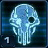 |
Covert Ops | Nova has a 100 supply maximum, but her units and structures have increased life, deal additional damage, and are resistant to stun effects. Trained units are instantly deployed onto the battlefield. |
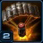 |
Griffin Airstrike | Unlocks the ability to call down the Griffin, which deploys several explosives along a targeted path. Call down the Griffin from the top panel. |
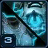 |
Assault Mode | Unlocks the ability to swap between two equipment loadouts in the field. Nova gains access to different abilities and a different weapon with each loadout. |
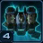 |
Barracks Upgrade Cache |
Unlocks the following upgrades at the Barracks Tech Lab:
|
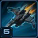 |
Tactical Airlift | Unlocks the ability to call down the Griffin to rapidly transport your units to a targeted location. Call down the Griffin from the top panel. |
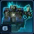 |
Factory Upgrade Cache |
Unlocks the following upgrades at the Factory Tech Lab:
|
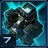 |
Automated Refineries | Refineries automatically harvest Vespene Gas without the need for SCV's. |
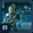 |
Covert Ops Upgrade Cache |
Unlocks an upgrade at the Barracks Tech Lab that enables Spec Ops Ghosts to fire two additional shots when using Snipe. Also unlocks an upgrade at the Ghost Academy that increases Nova's life regeneration rate. |
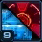 |
Tac Nuke Strike and Holo Decoy |
Unlocks the Tac Nuke Strike ability, which allows Nova to call down a nuke while in Stealth Mode. Also unlocks the Holo Decoy ability, which allows Nova to create a duplicate of herself that will attack on its own while in Assault Mode. |
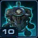 |
Starport Upgrade Cache |
Unlocks the following upgrades at the Starport Tech Lab:
|
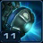 |
Research and Development | Reduces cost and time required to research upgrades at Tech Labs and the Ghost Academy by 50%. |
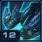 |
Raven Upgrade Cache |
Unlocks the following upgrades at the Starport Tech Lab:
|
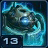 |
Military Hardware | Increases Nova's maximum number of Defensive Drone charges by 2 and reduces their cooldown by 30 seconds. |
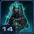 |
Nova Upgrade Cache |
Unlocks the following upgrades at the Ghost Academy:
|
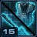 |
Stance Dance |
Reduces the cooldown of Stealth Mode and Assault Mode by 15 seconds. Nova gains maximum energy when switching modes. Switching to Stealth Mode grants temporary invulnerability and switching to Assault Mode grants a temporary bonus to damage dealt (100%). |
Highlighted rows denote large power spikes for the commander.
Achievements
The commander-specific achievements for Nova are:
| Achievement | Name | Description |
|---|---|---|
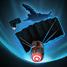 |
Air Raid | Deal 50,000 damage with Griffin Airstrike in Co-op Missions. |
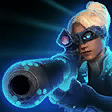 |
Cloak and Dagger | Deal 200,000 damage with Nova while she is in Stealth Mode. |
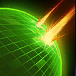 |
Drone It Out | Absorb 10,000 damage for your ally with Nova's Defensive Drone in Co-op Missions. |
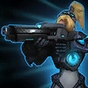 |
Riding Shotgun | Deal 200,000 damage with Nova while she is in Assault Mode. |
Calldowns
The calldowns for Nova, at level 15, with no mastery points added are:
| Calldown | Name | Description | Recommended Usage | Numbers |
|---|---|---|---|---|
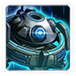 |
Defensive Drone | Provides friendly units with shields that absorb up to 200 damage. Lasts for 60 seconds. |
|
|
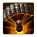 |
Griffin Airstrike | Calls down the Griffin to deal 500 damage to all targets in its flight path after a short delay. |
|
|
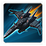 |
Tactical Airlift | Instantly transports friendly units in the target area to a targeted location. |
|
|
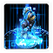 |
Instant Regeneration | Requirements:Nova recovering in stasis Instantly revives Nova at the target location. Resource cost is determined by the amount of time remaining. |
|
|
Sub-Ascension Leveling
Difficulty: Easy
Your army composition should be mostly Biological units, with Liberators to help protect your army against enemy ground units. Rely on Griffin Airstrikes and Defensive Drones as much as possible to reduce army losses.
While leveling through Mastery levels, allocate points into Power Set 3 in a 2:1 split for Nova's Energy Regeneration to Unit HP Regeneration.
Masteries
Below are the three Power Sets for Nova with the recommended point allocations for each. Note that these are meant to serve a general, all-purpose build that is effective across all maps with no Prestiges selected. You are highly encourged to change these masteries to suit your playstyle and particular challenges you face (e.g. Weekly Mutations).
Power Set 1:
| Power | Value | Recommended Points to Add | Further Considerations |
|---|---|---|---|
| Nuke and Holo Decoy Cooldown | -3 sec per point -90 sec maximum |
0 | Due to the high cooldown time of Nuke/Holo Decoy, it is generally not viable to go for the cooldown mastery. However, for players who use this ability liberally, and find they are just short of some time before they can use it again, the mastery might be worth adding a few points into. |
| Griffin Airstrike Cost | -10 per point -300 maximum |
30 |
The reduction to the Nuke cooldown is irrelevant here (and Holo Decoy is not very useful). Griffin Airstrike has a lot more utility.
Power Set 2:
| Power | Value | Recommended Points to Add | Further Considerations |
|---|---|---|---|
| Nova Primary Ability Improvement | 1.67% per point 50% maximum |
30 | The attack speed mastery can benefit units like Siege Tanks and Liberators during long, sustained engagements. If that is required by the player, this mastery might be useful, especially if Nova can 1-shot units like infested anyway.The Primary Ability improvement mastery, however, improves the damage of Snipe, Penetrating Blast, Sabotage Drone and the shield provided by Blink. |
| Combat Unit Attack Speed | +0.5% per point +15% maximum |
0 |
Increasing Nova's Snipe and Penetrating Blast damage can make a huge difference on the battlefield.
Power Set 3:
| Power | Value | Recommended Points to Add | Further Considerations |
|---|---|---|---|
| Nova Energy Regeneration | 1% per point 30% maximum |
20 | A split is generally recommended here to ensure units have some healing. Nova's energy regeneration is critical though, as it will allow you to spam her abilities more often. |
| Unit Life Regeneration | 0.2 per point 6 maximum |
10 |
The split here is to allow your units to regenerate themselves on the battlefield when out of combat, at a reasonable rate while still ensuring Nova has enough energy regeneration to spam skills.
Prestiges
Below are the prestiges for Nova. Note that "Effective Level" is the level at which the prestige achieves it full effect.
| Level | Name | Description | Effective Level | Notes |
|---|---|---|---|---|
| 1 | Soldier of Fortune |
|
1 |
|
| This prestige allows Nova to accrue charges faster on the production structure of her choice, making this a very versatile prestige. The choice of structure will be heavily dependant on the enemy composition, so early scouting will be important. | ||||
| Level | Name | Description | Effective Level | Notes |
|---|---|---|---|---|
| 2 | Tactical Dispatcher |
|
5 | None |
| While map mobility is important, the increase in cooldown of Griffin Airstrike is very detrimental to Nova, as the airstrike is Nova's primary method of weakening enemy bases and attack waves before engaging with her army to minimize losses. This prestige encourages players to engage waves with their armies directly, which can increase losses taken by Nova. | ||||
| Level | Name | Description | Effective Level | Notes |
|---|---|---|---|---|
| 3 | Infiltration Specialist |
|
9 | None |
| The loss of the Combat Suit reduces Nova's versatility. The impact of this depends on several factors, like the enemy composition faced, since Nova will usually use the Combat Suit to clear weaker attack waves that are not worth airstriking. However, it does allow Nova to easily clear large swathes of enemy bases with her Nukes and Sabotage Drones. Combined with the Nuke cooldown reduction mastery, this prestige is very powerful. | ||||
For general play, Soldier of Fortune offers Nova the versatility she needs to be able to handle any mission and attack wave composition. Infiltration Specialist may excel on some maps, but it's efficacy is highly affected by attack wave compositions, and is therefore, not a reliable prestige to be used.
Hero Unit
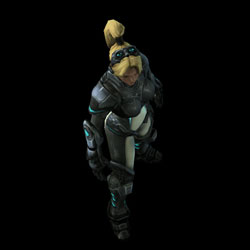
Spawn time: 4:00
Respawn time: 1:30
The abilities for Stealth Mode Nova are:
| Ability | Name | Description | Cooldown | Energy Cost |
|---|---|---|---|---|
 |
Snipe | Deals 200 damage to target enemy ground or air unit from long range (10). Can target biological and mechanical units. |
0 seconds | 50 |
 |
Sabotage Drone | Deploys an undetectable explosive drone that deals 200 damage (400 vs Structure) to enemy ground units in the target area. | 45 seconds | 100 |
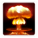 |
Tac Nuke Strike | Calls down a Nuclear Strike at the target location, dealing 600 damage in a large radius after 5 seconds. | Coolup: 600 seconds Cooldown: 420 seconds |
0 |
The abilities for Assault Mode Nova are:
| Ability | Name | Description | Cooldown | Energy Cost |
|---|---|---|---|---|
 |
Penetrating Blast | Deals 50 (100 vs Light) damage to enemy ground units in a wide arc. Does not damage friendly units. |
0 seconds | 50 |
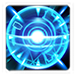 |
Blink | Teleports Nova to a nearby location. Nova gains a temporary shield that absorbs up to 200 damage for 8 seconds. Ability regains a charge every 8 seconds. Can store a maximum of 3 charges. |
8 seconds | 0 |
| Holo Decoy | Deploys a holographic duplicate of Nova that automatically attacks enemy units. The holo decoy lasts for 60 seconds. | Coolup: 600 seconds Cooldown: 420 seconds |
0 |
The upgrades for Nova are:
| Upgrade | Name | Effect |  / / |
Research Time |
|---|---|---|---|---|
| Ghost Visor | Grants Nova detection, allowing her to see and track cloaked and burrowed enemy units. | 75/75 | 45 seconds | |
| Caduceus Reactor | Increases Nova's life regeneration rate to 10. | 75/75 | 45 seconds | |
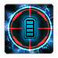 |
Operational Efficiency | Refunds 50% of Snipe's energy cost when Nova uses it to kill an enemy unit. | 100/100 | 60 seconds |
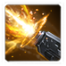 |
Infernal Projectiles | Increases the range of Nova's Penetrating Blast by 2. | 100/100 | 60 seconds |
Recommended Army Composition
The recommended army composition for Nova is below. Note that this assumes no Prestige talent selected and recommended Mastery Allocations. This is a basic recommendation for your army framework. It is recommended to gain an understanding for each of the units in the Units section and further add tech units so that you are able to better handle the situations you face.
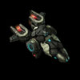
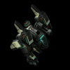
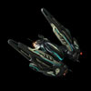
Goliath/Liberator builds for Nova are extremely versatile and allow her to handle a variety of different situations. By making use of Griffin Airstrikes, her army can clear off any left-over forces. Ensure you have Ravens to heal damage on your army.
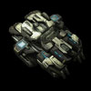
Add Siege Tanks to your army so that you may drop Spider Mines on enemy spawn positions when facing ground-based enemy compositions.
Combat Units
For more information on Nova's unit stats, comparison between units and upgrade calculations, visit the Data Tables page.
Nova's combat units are listed below:
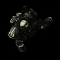
Elite Marine
- Does high DPS.
- Super Stimpack upgrade is vital for survivability.
Skills:
| Skill | Name | Description | Cooldown | Energy Cost |
|---|---|---|---|---|
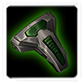 |
Super Stimpack | Heals the Elite Marine for 2 life per second and increases its attack speed by 50% and movement speed by 50% for 15 seconds. | 15 seconds | 0 |
Upgrades:
| Upgrade | Name | Effect | / |
Research Time |
|---|---|---|---|---|
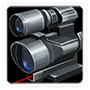 |
Laser Targeting System | Increases the Elite Marine's vision by 2 and its weapon range by 1. | 50/50 | 30 seconds |
 |
Super Stimpack | Heals the Elite Marine for 2 life per second and increases its attack and movement speeds for 15 seconds. | 75/75 | 45 seconds |
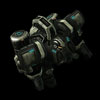
Marauder Commando
- Good against armored targets.
- Upgrades not necessary.
Skills:
| Skill | Name | Description | Cooldown | Energy Cost |
|---|---|---|---|---|
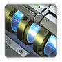 |
Magrail Munitions | Deals 90 damage to target enemy unit. | 30 seconds | 0 |
Upgrades:
| Upgrade | Name | Effect | / |
Research Time |
|---|---|---|---|---|
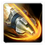 |
Suppression Shells | Units hit by the Marauder Commando have temporarily slowed attack and movement speeds (50%) for 1.5 seconds. Has a reduced effect on heroic units (20%). Massive units are immune. |
50/50 | 30 seconds |
 |
Magrail Munitions | Equips Marauder Commandos with an additional weapon that deals 90 damage to their target every 30 seconds. | 75/75 | 45 seconds |
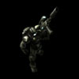
Spec Ops Ghost
- Provides great burst damage against biological targets.
- "EMP" can be used against energy-based targets to render them useless, such as Hybrid Dominators.
- "Triple Tap" can increase the damage they do significantly.
Skills:
| Skill | Name | Description | Cooldown | Energy Cost |
|---|---|---|---|---|
 |
Snipe | Deals 170 damage to target enemy biological unit. Mechanical units are immune. |
30 seconds | 0 |
 |
EMP Round | Deals 100 damage to shields and depletes the energy of enemy units in the target area. Cloaked units are revealed for 10 seconds after being hit. | 45 seconds | 0 |
Upgrades:
| Upgrade | Name | Effect | / |
Research Time |
|---|---|---|---|---|
 |
EMP Round | Allows Spec Ops Ghosts to use EMP Round, which deals 100 damage to shields and depletes the energy of enemy units in the target area. Cloaked units are revealed for 10 seconds after being hit. | 50/50 | 30 seconds |
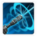 |
Triple Tap | Spec Ops Ghosts fire 2 additional shots that deal 85 damage each when using Snipe. | 75/75 | 45 seconds |
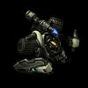
Hellbat Ranger
- Generally not worth making.
- They jump out of range of Defensive Drones and end up getting killed.
- They have poor DPS.
Skills:
| Skill | Name | Description | Cooldown | Energy Cost |
|---|---|---|---|---|
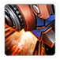 |
Jump Jet Assault | Launches the Hellbat Ranger toward nearby enemy ground units. Briefly stuns enemy units on impact and gains +4 armor. | 5 seconds | 0 |
Upgrades:
| Upgrade | Name | Effect | / |
Research Time |
|---|---|---|---|---|
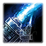 |
Infernal Pre-Igniter | Hellbat Rangers deal +15 damage to light units in both modes. | 50/50 | 30 seconds |
 |
Jump Jet Assault | Launches the Hellbat Ranger toward nearby enemy ground units. Briefly stuns enemy units on impact and gains +4 armor. | 75/75 | 45 seconds |
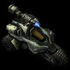
Hellion Ranger
- Converted from Hellbat Rangers.
- Good mobility.
- Low HP makes them struggle against stronger attack waves.
Upgrades:
| Upgrade | Name | Effect | / |
Research Time |
|---|---|---|---|---|
| Infernal Pre-Igniter | Hellbat Rangers deal +15 damage to light units in both modes. | 50/50 | 30 seconds |
Strike Goliath
- Useful against air targets, due to its "Lockdown Missiles" upgrade which can stun.
- Ineffective against ground targets.
Skills: None
Upgrades:
| Upgrade | Name | Effect | / |
Research Time |
|---|---|---|---|---|
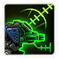 |
Ares-Class Targeting System | Increases the Strike Goliath's anti-air weapon range by 3 and its ground weapon range by 1. | 50/50 | 30 seconds |
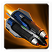 |
Lockdown Missiles | Stuns and disables the detection of mechanical units hit by the Strike Goliath's anti-air attacks for 3 seconds. Heroic units are immune. |
75/75 | 45 seconds |
Heavy Siege Tank
- Can deal a large amount of splash damage.
- Can deploy Spider Mines to further defend a position.
Skills:
| Skill | Name | Description | Cooldown | Energy Cost |
|---|---|---|---|---|
 |
Deploy Spider Mines | Spider Mines pursue enemy units that come in range, and detonate for heavy area damage. Buried Spider Mines can only be seen by enemy detectors. (Costs 50 minerals). | 30 seconds | 0 |
Upgrades:
| Upgrade | Name | Effect | / |
Research Time |
|---|---|---|---|---|
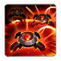 |
Spider Mines | Allows Heavy Siege Tanks to deploy Spider Mines, which pursue enemy units that come in range, and detonate for heavy area damage. Buried Spider Mines can only be seen by enemy detectors. | 50/50 | 30 seconds |
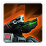 |
Graduating Range | Increases the Heavy Siege Tank's attack range by 1 every 3 seconds while in Siege Mode, up to a maximum of 5 additional range. | 75/75 | 45 seconds |
Raid Liberator
- Provides great anti-air and single-target ground damage.
- "Raid Artillery" upgrade can be obtained if you want to deal damage to structures.
- "Smart Servos" upgrade is a necessity if you intend on switching modes often.
Skills: None
Upgrades:
| Upgrade | Name | Effect | / |
Research Time |
|---|---|---|---|---|
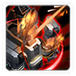 |
Raid Artillery | Allows Raid Liberators to attack structures while in Defender Mode. | 50/50 | 30 seconds |
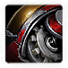 |
Smart Servos | Allows Raid Liberators to transform between modes four times faster. | 75/75 | 45 seconds |
Covert Banshee
- Generally not made as other units can better fit the role.
- Can be used against certain ground compositions with the "Rocket Barrage" ability.
Skills:
| Skill | Name | Description | Cooldown | Energy Cost |
|---|---|---|---|---|
| Rocket Barrage | Deals 75 damage to enemy ground units in the target area. | 15 seconds | 0 |
Upgrades:
| Upgrade | Name | Effect | / |
Research Time |
|---|---|---|---|---|
| Advanced Cloaking Field | Allows Covert Banshees to remain permanently cloaked. | 50/50 | 30 seconds | |
| Rocket Barrage | Allows Covert Banshees to use Rocket Barrage, which deals 75 damage to enemy ground units in the target area. | 75/75 | 45 seconds |
Raven Type-II
- A must-have in any army composition.
- Can heal your army with the Bio-Mechanical Repair Drone.
- Can deploy Railgun turrets to further fortify a position.
- Predator Missiles can deal a lot of damage, particularly to clumped up enemies.
Skills:
| Skill | Name | Description | Cooldown | Energy Cost |
|---|---|---|---|---|
| Build Railgun Turret | Automated defensive turret. Damages all enemy ground units in a straight line. Lasts for 60 seconds. Can attack ground units. |
30 seconds | 0 | |
| Deploy Bio-Mechanical Repair Drone | Heals nearby biological and mechanical units. Lasts for 30 seconds. | 60 seconds | 0 | |
| Predator Missile | Deploys a missile that pursues target enemy unit, dealing 100 (+35 vs. shields) damage in a wide radius upon contact. | 45 seconds | 0 |
Upgrades:
| Upgrade | Name | Effect | / |
Research Time |
|---|---|---|---|---|
| Covert Triage | Increases the healing of the Raven Type-II's Bio-Mechanical Repair Drone by 25% and allows it to cloak units that it is currently healing. | 75/75 | 45 seconds | |
| Enhanced Manufacturing | Allows the Raven Type-II to store up to 3 charges for each of its abilities. | 75/75 | 45 seconds |
Build Order
Below is the standard economic build order for Nova. For more information on how to read and construct your own build orders, please check the Build Order Theory page.
14 Refinery
15 Refinery
18 Command Center
19 Barracks
22 Marines -> Rocks
Gameplay Guide
Playstyle Traps
Many players prefer to use Assault mode to deal with units when pushing into enemy bases. However, Nova's strength is with her Snipe ability that can be used to target Mechanical units. Use Nova's Snipe to take out high value targets and minimize your army losses. Combined with the "Operational Efficiency" upgrade, you'll be able to clear out a lot of high-damage units very quickly.
Playstyle Tips
- Use Defensive Drones to protect your units as you defend/attack.
- Switch modes for Nova often to take advantage of that particular mode's strengths.
- In general combat, you will want to have Nova in Stealth Mode to snipe key targets.
- Soften enemy bases with Tac Nuke Strikes and Griffin Air Strikes before pushing in to reduce losses.
- If using Spider Mines for defense, place them on the top of your ramp so they can take advantage of high-ground vision range.